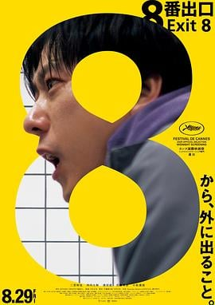

6.3
8 番出口
Exit 8
2025
日本
评分 6.3
导演:
川村元气
演员:
二宫和也 / 河内大和 / 浅沼成 / 花瀬琴音 / 小松菜奈
类型:
冒险,恐怖,悬疑
剧情简介
地铁站的一条昏暗通道仿佛被异物入侵，身为“迷路男”的主人公在无尽的长廊中踌躇。他握着微弱手电，脚步在冰冷的地砖上回响，墙壁的荧光灯忽闪忽灭。他必须遵守：“如发现任何异常，立即折返；如未发现异常，不得折返”。同行的是身穿西装的“行走男”，无言地与他一同步入地下，但两人的目的地只有一个——出口编号 8。随着转角越来越像上一次、灯光灿烂却又似曾相识，他意识到自己正在被一条有意识的迷宫牵引。墙壁缓缓伸长、影子不再自然，甚至连呼吸声都像被扭曲。导演川村元气将这部由热门游戏改编的真人电影构造成一种迷失感：当“出口”不再寄托希望，而是试炼本身，每一次选择都可能是陷阱，每一次折返都可能成为解脱。他在地下狭窄空间中创造出一种压抑而苍白的气息：灯光下寸步难行，镜头绕行显示角色的背影、空旷的站台、反射镜中的“行走男”身影。影片突出的是“寻找出口”这一经典冒险形态，却层层叠加恐怖与悬疑元素：看似简单的规则背后，隐藏着更深的心理机制——迷惘、焦灼、对未知的畏惧。观众与主角同行，感受走廊的延伸、墙壁的裂隙、脚步的孤寂与回声。这不仅是一场体力的逃亡，更是一场精神的迷航。你会看到主角为什么不能马上折返，为什么要坚持前行；你也会陪伴他猜测、犯错、恐慌，直到出口的灯牌在远处模糊出现。电影不揭露终极答案，而是将体验交给观众：当你踏出“8番出口”的那一刻，真正逃出的究竟是谁？